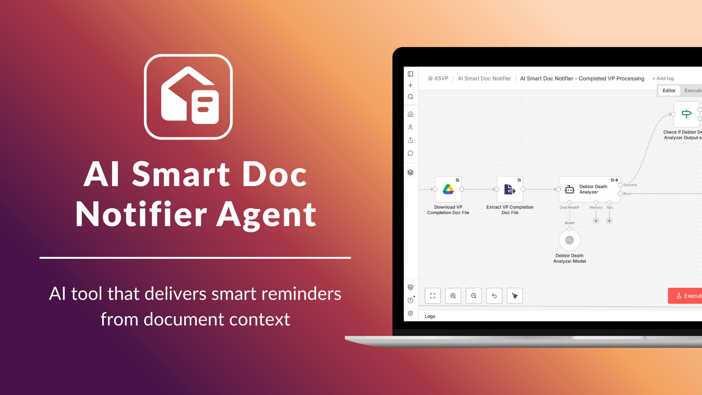
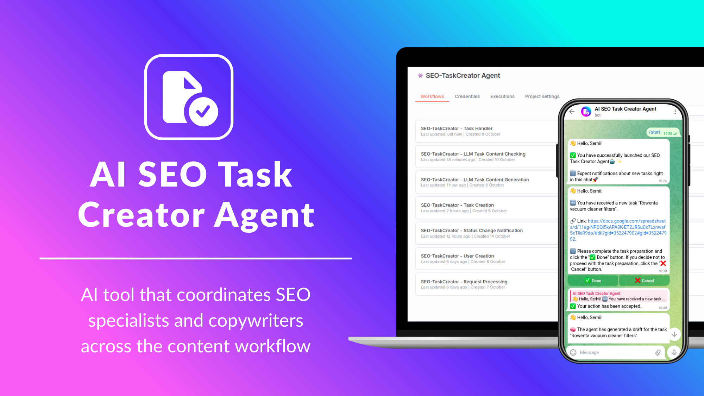
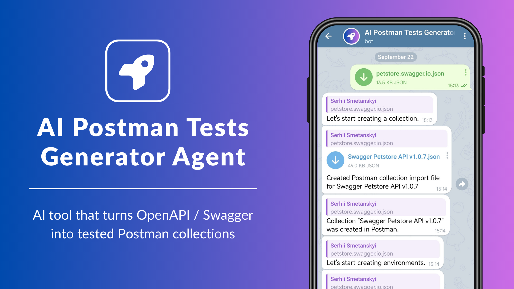
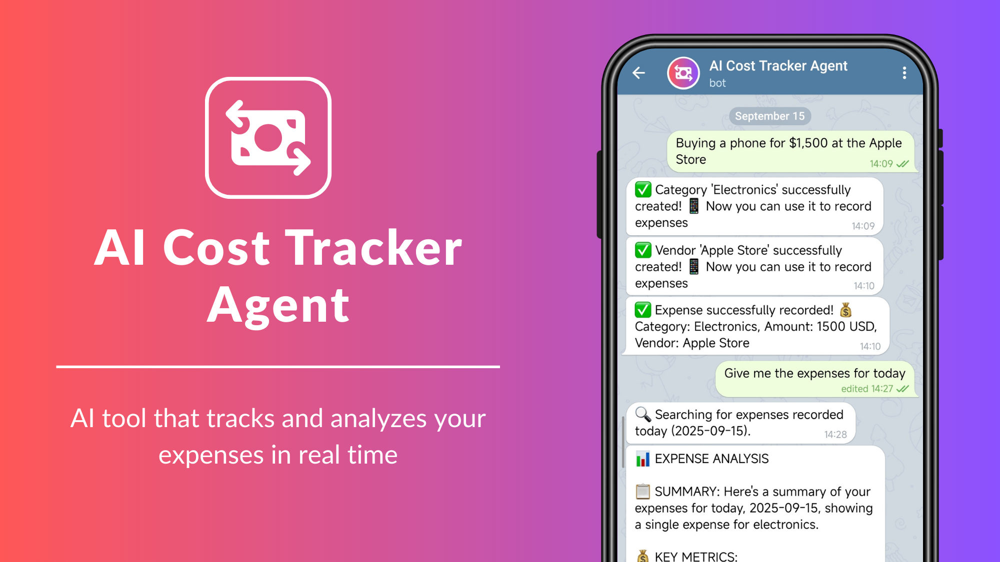
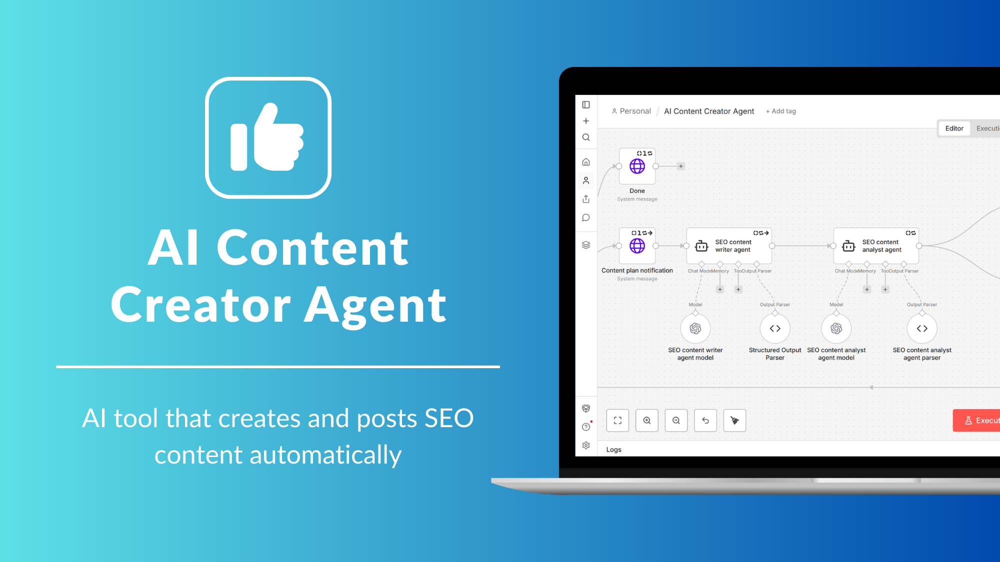
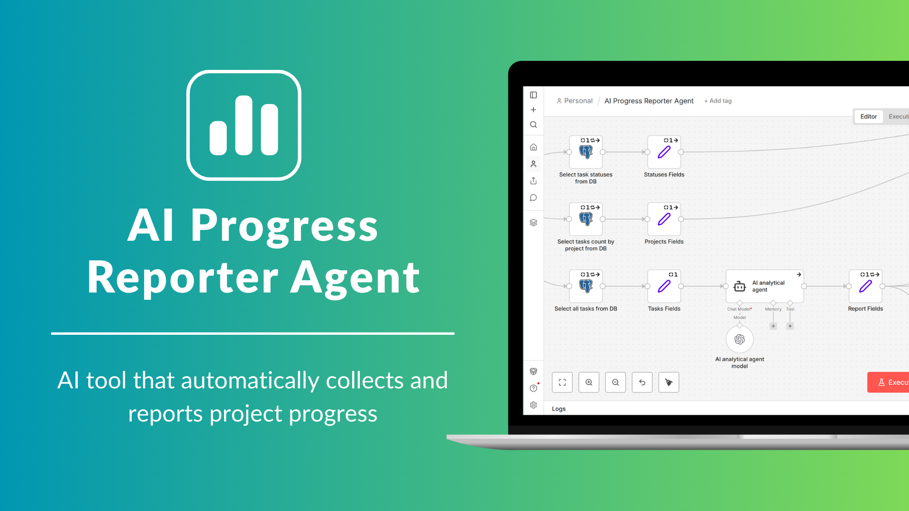
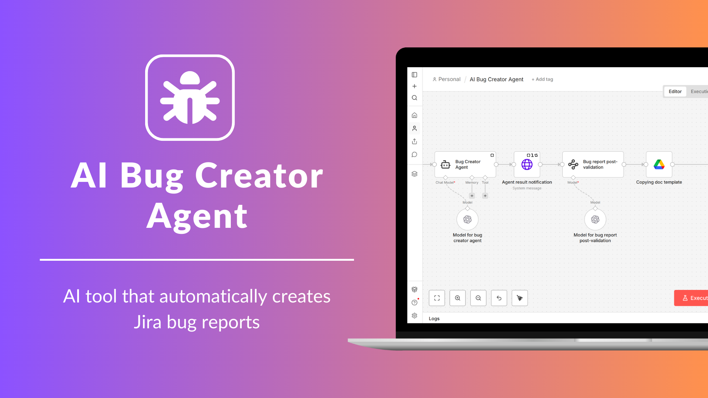
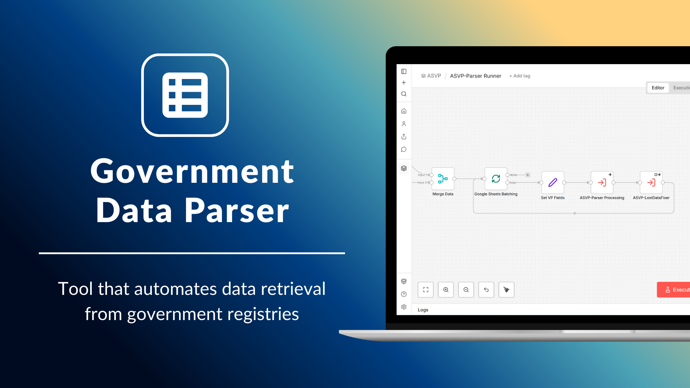

About
I'm an Automation Engineer with a strong background in Quality Assurance and Software Development. I specialize in creating AI agents and Automated Workflows that eliminate routine tasks, optimize processes, and reduce time and resource waste.
With hands-on experience in Software Development, I design automations that are not only efficient — but also robust, scalable, and easy to maintain.
I build automations that run 24/7, reliably and autonomously — no manual input required.
I keep it simple — using only the tools that fit your goals and make things easier.
Services
-
Web Scraping and Parsing
Flexible solutions for structuring and consolidating data collected from open unstructured sources.
-
AI Agents and Assistance
AI-powered chatbots and workflows built on your own data for natural, human-like conversations.
-
Business Process and Routine Automation
Automating routine tasks and business processes to enhance productivity and reduce operational costs.
-
Integrations
Connecting diverse applications and APIs for streamlined data exchange and workflow efficiency.
Cases
Reminders
Smart Doc Notifier Agent
Smart Doc Notifier Agent is an intelligent automation system designed to act as a smart notifier assistant for legal documentation from state registries. The agent automatically scans legal documents from state registries, uses AI to detect required attributes, verify that they meet the necessary rules, and identify any missing documents, then sends context-based email notifications to the user.
Smart Doc Notifier Agent is a tool that helps lawyers and finance specialists keep track of changes in monitored documents, making sure they always know about updates and critical information.
Features
- Automatic monitoring of legal documents from state registries
- AI-powered analysis to detect required attributes and ensure they meet the rules
- Identification of missing or incomplete documents relevant to legal or financial processes
- Context-based email notifications to responsible users
- Personalized alerts based on document type, status, and urgency
- Continuous tracking of changes and updates in monitored documents
- Control to customize document analysis and notification rules for each document type
- Detailed logging of all document checks and alerts
- Smart prioritization of notifications based on criticality and deadlines
Tech Stack n8n GPT-5 Google Docs Email
Management
SEO Task Creator Agent
SEO Task Creator Agent is an intelligent automation system that seamlessly connects SEO specialists and copywriters, transforming task creation and content management into a fully streamlined process. It operates as a comprehensive task management system, where human experts and AI agents work together in a single coordinated workflow, managing every stage from task initiation to content generation and final approval.
The agent automatically creates SEO content briefs (Technical Specifications) in Google Docs with all essential SEO attributes and details — keywords, competitor analysis, LSI suggestions, metadata, and structured content checklists — to fully automate the process of assigning tasks to copywriters while accounting for all SEO requirements and project-specific guidelines.
Features
- Single point of task management directly in the messenger
- Smart coordination between SEO specialists, copywriters, and AI agents
- Automatic task status management across all workflow stages
- Dynamic deadline calculation based on task priority and context
- Automatic determination of the next workflow stage based on current task status
- Automatically analyzes competitor pages to gather insights, content structure, and keywords for AI-generated content
- Automatic SEO brief generation in Google Docs with full metadata and keyword context
- Primary and secondary automated content validation according to predefined quality checklists
- AI-powered recommendations for SEO optimization, keyword usage, and structure
- Automatic content improvement and refinement using LLM-powered analysis
- Overdue task alerts to administrators when status remains unchanged for >24 hours
- Full user management with role-based access control and permissions
- Prompt management module for AI agents to customize generation rules per project
- Comprehensive logging and action tracking across the system
- Intelligent, role-based and personalized notifications throughout all workflow stages
Tech Stack n8n GPT-4o FireCrawl Google Docs Telegram
Testing
Postman Tests Generator Agent
Postman Tests Generator Agent is an AI-powered tool that automatically transforms your OpenAPI/Swagger specifications into structured Postman collections with comprehensive tests, validations, and smart organization. It streamlines API testing and saves valuable time for developers and QA teams.
Features
- Upload API spec file or describe your API in plain English via Telegram bot
- Deep API analysis with intelligent parsing of OpenAPI/Swagger specs
- AI-powered processing of API structure into detailed Postman test scenarios
- Automatic creation of complete Postman test collections with production-ready coverage
- Automatic generation of Postman environments with predefined variables
- Smart organization of requests with logical folder structures and endpoint grouping
- Comprehensive test generation (positive, negative, edge case scenarios)
- JSON schema validation for request and response bodies
- Automatic setup of environment variables (base URLs, API keys, configurable values)
- Ready-to-use Postman collection export for instant usage
- Automatic import into Postman of generated collections with tests and environments
Tech Stack n8n Gemini Postman Telegram
Finance
Cost Tracker Agent
Cost Tracker Agent is an AI-powered system that manages your expenses automatically. It records expenses from natural language, sorts them by category and vendor, gathers the data, and provides clear financial insights, giving you full control of your finances in real time.
Features
- Integration with messengers
- Automatic classification of user requests into expense recording or data retrieval
- Natural language processing for extracting expense data from user messages
- Intelligent request classification and routing
- AI-powered category and vendor creation and management from user input
- Intelligent vendor recognition with automatic vendor profile creation
- Conversion of natural language queries into precise SQL database queries
- Advanced expense filtering and retrieval via SQL query generation
- Comprehensive spending analytics with category and vendor breakdowns
- Data isolation and privacy protection through chat-based filtering
Tech Stack n8n Gemini PostgreSQL Telegram
Content
Content Creator Agent
Content Creator Agent is an AI-driven, fully autonomous end-to-end system for SEO content generation, handling everything from creating trending content to automatic website posting.
Features
- Integration with messengers
- Website analysis by LLM to identify content topics based on business niche
- Trend analysis via Perplexity AI to generate content ideas based on business niche
- Automated SEO content plan generation powered by LLM
- SEO content writing by LLM based on the content plan
- Content analysis and validation using specialized AI agent
- SEO scoring by an AI agent to evaluate content quality, keyword usage, structure, and optimization level
- Preliminary content review available via Google Docs before publishing
- Automatic publishing to WordPress sites
- Option for manual content posting to WordPress after review
Tech Stack n8n GPT-4o Perplexity Google Docs Wordpress Telegram
Tools
Progress Reporter Agent
Progress Reporter Agent is a fully autonomous AI agent that collects, analyzes, and delivers structured project updates — saving time and keeping teams and stakeholders aligned.
Features
- Integration with messengers
- Understands user requests to identify the context needed for the report
- Automated task extraction from Jira based on filters (project, date range, sprint, etc.)
- Collects metrics based on data gathered from Jira
- AI-generated summaries of task progress, blockers, and key updates
- Visual reports with charts and dashboards made by Metabase
- Enables dynamic interaction with reports for filtering progress data and metrics
- Full automation of the reporting workflow
Tech Stack n8n GPT-4o PostgreSQL Jira Metabase Telegram
Bug Creator Agent
Bug Creator Agent is an autonomous AI agent that automates the creation of bug reports in Jira.
Features
- Integration with messengers
- Recognition of input text or Google Docs containing problem descriptions
- Dynamic processing flow based on request content
- Ticket content generated by an LLM based on a predefined template
- Possibility of preliminary ticket review via Google Docs
- Ticket creation in Jira
Tech Stack n8n GPT-4o Jira Google Docs Telegram
Parsers
Government Data Parser
Government Data Parser is a tool that automates data retrieval from government registries, streamlining access to official information and documents. It provides a fully automated pipeline for monitoring, collecting, and managing registry data, ensuring accuracy, compliance, and efficiency.
Features
- Integration with messengers
- Fully automated process for retrieving data from multiple government registries
- Continuous monitoring of registries for new or updated information with instant notifications
- Document downloader that retrieves files based on type, ownership, and registry classification
- Validation checks at every stage to prevent duplicates and maintain data integrity
- Data normalization and structured formatting for easier analysis and processing
- Scheduled and on-demand parsing to accommodate real-time or batch processing
- API-ready outputs for integration with other tools, dashboards, or automation workflows
- Logging of errors and intelligent retries to ensure data completeness in case of failures
Tech Stack n8n Google Docs Telegram